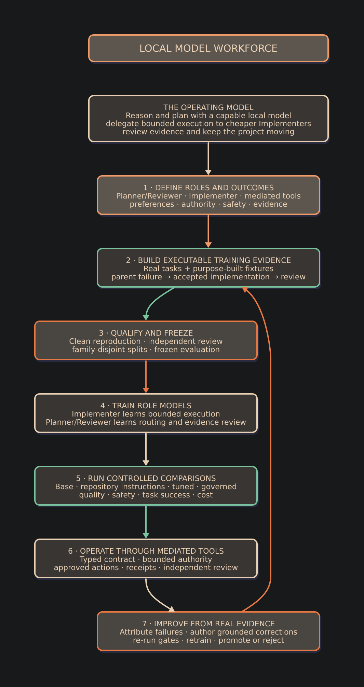

Why I Started Building a Local Multi-Model Workforce, and Why the Industry May Be Heading There Too
How a self-directed effort grew into a supervised multi-model architecture, a set of working products, and an emerging professional direction.